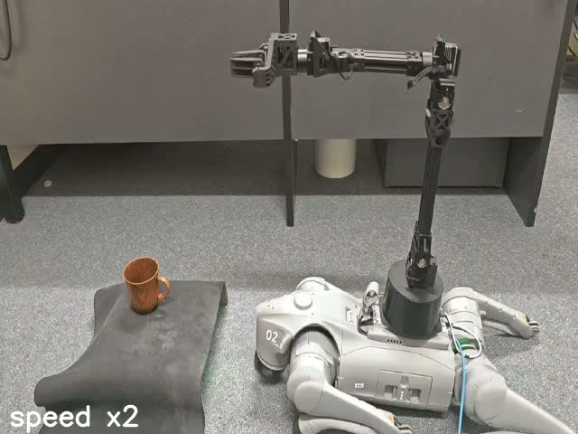

Abstract
Pre-training vision-language representations on human action videos has emerged as a promising approach to reduce reliance on large-scale expert demonstrations for training embodied agents. However, prior methods often employ time contrastive learning based on goal-reaching heuristics, progressively aligning language instructions from the initial to the final frame. This overemphasis on future frames can result in erroneous vision-language associations, as actions may terminate early or include irrelevant moments in the end. To address this issue, we propose Action Temporal Coherence Learning (AcTOL) to learn ordered and continuous vision-language representations without rigid goal-based constraint. AcTOL treats a video as a continuous trajectory where it (1) contrasts semantic differences between frames to reflect their natural ordering, and (2) imposes a local Brownian bridge constraint to ensure smooth transitions across intermediate frames. Extensive imitation learning experiments on both simulated and real robots show that the pretrained features significantly enhance downstream manipulation tasks with high robustness to different linguistic styles of instructions, offering a viable pathway toward generalized embodied agents.
Comparison of existing goal-reaching pre-training strategies and the proposed AcTOL approach.
Policy learning environments, including 3 tasks with a real-world Unitree D1 robot arm and 5 tasks each in two simulation environments.
Comparison of language-conditioned behavior cloning results by AcTOL and existing methods.
Visualization of the normalized zero-shot reward corresponding to different actions.
Video Gallery
Pick up cup
Open drawer 1

Open drawer 2

Open drawer 3

Close drawer 1
Close drawer 2
Close drawer 3
Close drawer 4
BibTeX
@misc{zhang2025provableorderingcontinuityvisionlanguage,
title={Provable Ordering and Continuity in Vision-Language Pretraining for Generalizable Embodied Agents},
author={Zhizhen Zhang and Lei Zhu and Zhen Fang and Zi Huang and Yadan Luo},
year={2025},
eprint={2502.01218},
archivePrefix={arXiv},
primaryClass={cs.RO},
url={https://arxiv.org/abs/2502.01218},
}